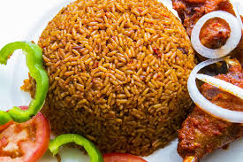

Jollof Rice

Description
Jollof rice is a spicy and savory West African dish that’s made differently from country to country. Nigerian jollof rice is prized for its delicious, smoky flavor and simplicity—to make it, you only need one pot!.
Ingredients
- 2 red bell peppers
- 3 plum tomatoes
- 2 white or red onions
- 1 scotch bonnet pepper
- Half cup (118 ml) of vegetable oil
- 2 tablespoons of tomato paste
- 1 teaspoon of curry powder
- 1 teaspoon of thyme
- 1 teaspoon of white pepper
- 2 bay leaves
- 2 cubes of chicken bouillon
- 1 cup of chicken stock
- 2 cups of long-grain
- Salt to taste
Steps
- Wash the peppers, onions and tomatoes.
- Blend the chopped ingredients together
- Rinse the rice in water until it runs clear
- Heat the vegetable oil over medium heat
- Chop 1 onion and saute it in the oil for four minutes
- Cook the tomato paste for five minutes.
- Add in the pepper puree and spices.
- Add the rice, chicken stock, water, and salt.
- Cover and cook the rice for 20 minutes.
- Simmer the rice for an additional 10-20 minutes
- Fluff and serve the jollof rice.
- Store the rice in the fridge for 5 days.